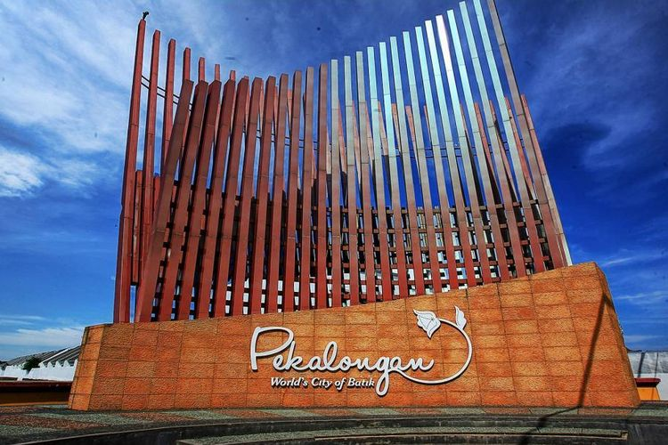

Sijaku hadir untuk memberikan solusi perbaikan rumah terbaik bagi warga Kota dan Kabupaten Pekalongan. Cepat, Terpercaya, dan Berkualitas.
Pesan Layanan Sekarang
Kami melayani hingga ke pelosok daerah untuk memastikan kenyamanan hunian Anda.
Visualisasi cakupan layanan aktif Sijaku di wilayah Kota dan Kabupaten Pekalongan.
Karena tim kami berada di dekat Anda, kami dapat mencapai lokasi dalam waktu singkat.
Mengenal karakteristik bangunan lokal dan sumber material terbaik di Pekalongan.
Gratis biaya kunjungan untuk seluruh wilayah jangkauan kami di Pekalongan.